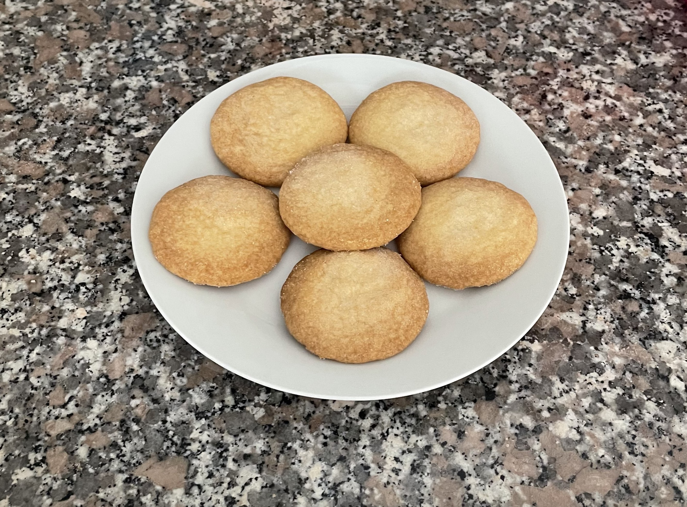
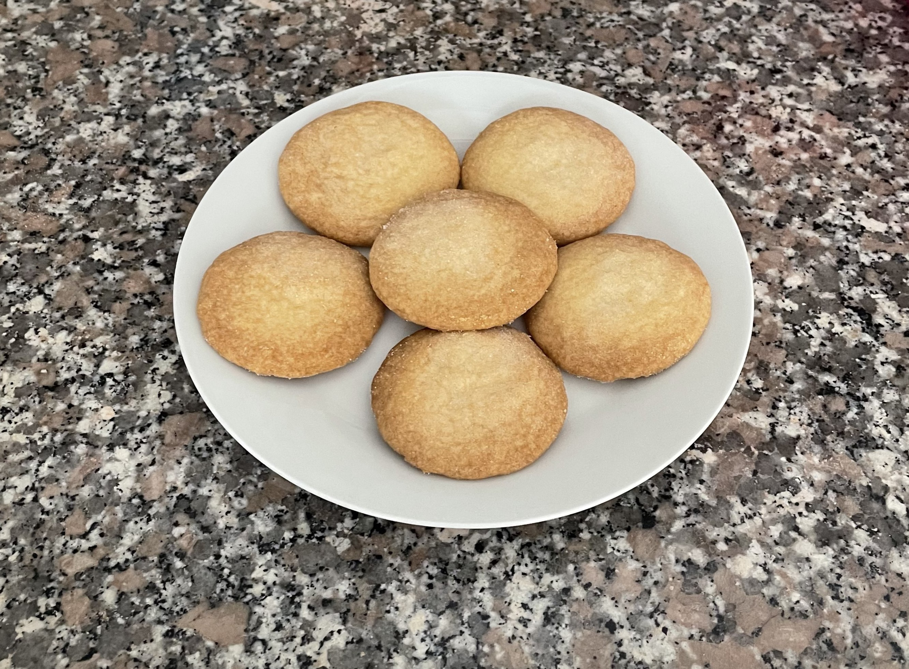
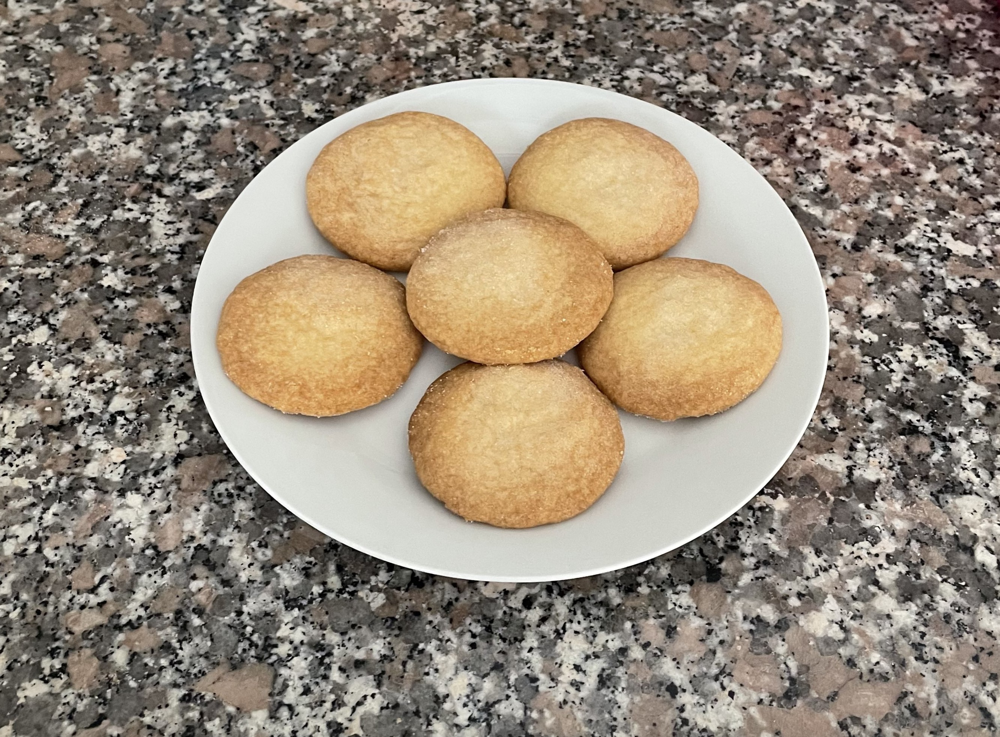
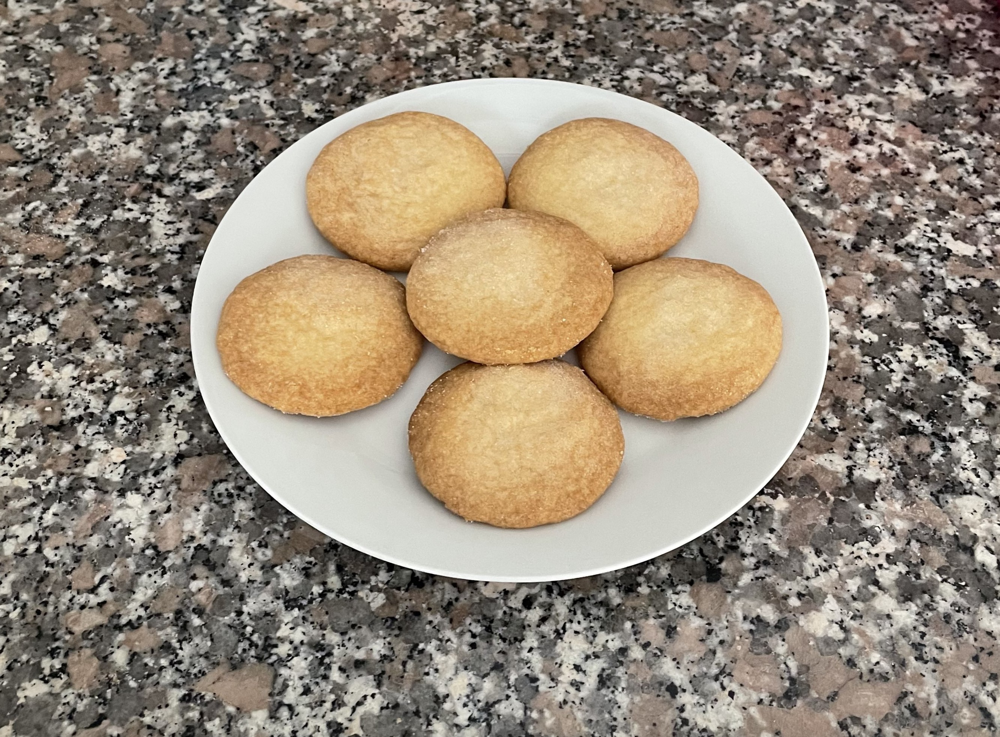

Time: Prep: 20 min
Cook: 15 min
Makes 20 biscuits
Heat the oven 170C gas 3/150C fan. Put the flour, butter and sugar into a mixing bowl. Use your hands to combine the ingredients until the mixture looks like breadcrumbs, then shape until it becomes dough.
On a lightly floured surface, use a rolling pin to roll out the dough to 0.5 cm thick. Cut the dough into fingers and place on a lined baking tray. Then sprinkle with the remaining caster sugar.
Chill the dough in the fridge for 20 mins, then bake for 15-20 mins until golden brown. Remove the shortbread fingers from the oven and leave to cool on the tray for 10 mins.